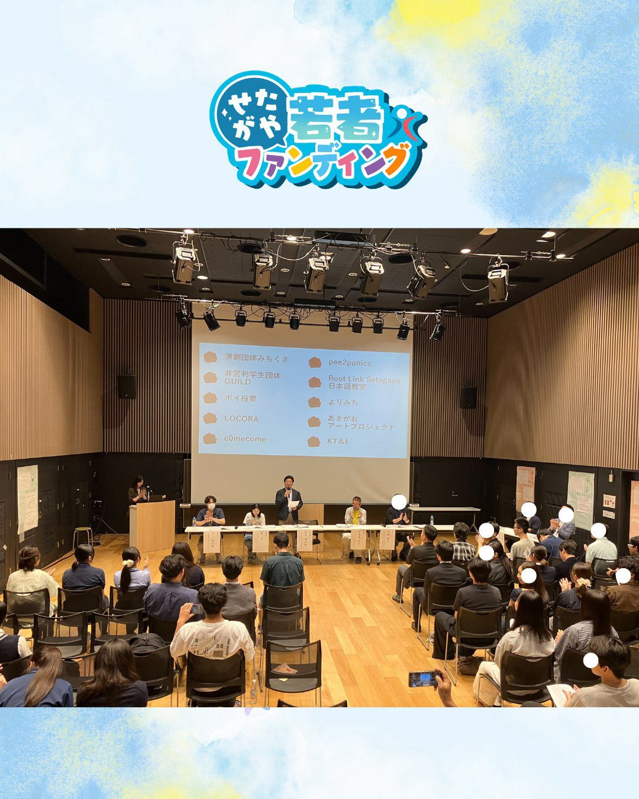

・2026年7月5日
【令和8年度せたがや若者ファンディング】
この度、世田谷区主催の令和8年度せたがや若者ファンディングに私共、非営利学生団体GUILDのプロジェクト、『GUILD-BASE せたがやひみつ基地』が採択されました！
審査頂きました審査員の皆様、運営の事務局の皆様、大変ありがとうございました！
2026.07.09
・2026年7月5日
【令和8年度せたがや若者ファンディング】
この度、世田谷区主催の令和8年度せたがや若者ファンディングに私共、非営利学生団体GUILDのプロジェクト、『GUILD-BASE せたがやひみつ基地』が採択されました！
審査頂きました審査員の皆様、運営の事務局の皆様、大変ありがとうございました！

